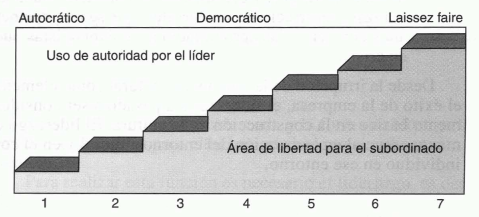
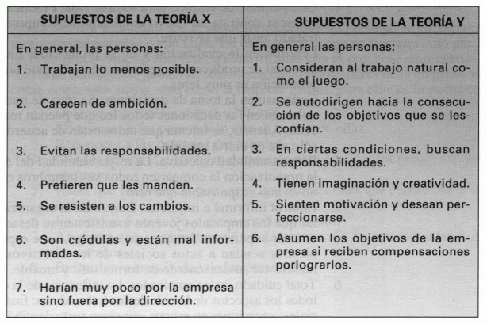

Tema 2: Proceso de dirección de la empresa
Concepto de dirección y niveles directivos
Trabajo del directivo. Combinar eficientemente recursos humanos y técnicos para lograr los objetivos de la empresa. Es un factor crítico que requiere una respuesta sistemática a los cambios del entorno, implicando procesos para la toma de decisiones en un entorno cambiante, siempre orientados a la consecución de objetivos. Estos principios directivos son de aplicación general en todo tipo de organizaciones.
Niveles Directivos
Los directivos se organizan en una estructura piramidal con tres niveles:
- Alta dirección: Es el nivel más alto, compuesto por el presidente y otros directivos clave.
- Función. Supervisan el funcionamiento general de la empresa y desarrollan los planes a largo plazo de la empresa:
- Creación de nuevos productos.
- Adquisición de otras compañías.
- Expansión internacional.
- Función. Supervisan el funcionamiento general de la empresa y desarrollan los planes a largo plazo de la empresa:
- Dirección intermedia. Incluye ejecutivos como directores de fábrica o jefes de división.
- Funciones:
- Desarrollar planes y procedimientos detallados para implementar los planes generales de la alta dirección.
- Supervisar a la dirección operativa.
- Funciones:
- Dirección operativa, de supervisión o de primera línea. Agrupa a los responsables directos de asignar tareas específicas a los trabajadores, por lo que están en contacto directo con los mismos.
- Funciones:
- Evaluar el rendimiento de los trabajadores.
- Ejecutar los planes desarrollados por los manos intermedios.
- Funciones:
Cualidades Esenciales de los Ejecutivos
Los ejecutivos deben poseer las siguientes cualidades:
- Cualidades técnicas. Conocimientos suficientes para comunicarse eficazmente con sus subordinados y superiores y ganarse la credibilidad de su equipo.
- Cualidades humanas. Es fundamental que sepan mantener buenas y sinceras relaciones humanas con su equipo fomentando un ambiente de trabajo positivo.
- Cualidades reflexivas. Abordar problemas y sus soluciones de forma lógica y sistemática, integrándolos en el contexto más amplio de la empresa. Esto implica adoptar una perspectiva a largo plazo en lugar de centrarse únicamente en soluciones inmediatas.
La función de planificación
Planificación. Proceso de establecer objetivos y definir estrategias y tareas necesarias para alcanzarlos.
- Planes a corto plazo o planificación táctica. Con un horizonte no superior a un año. Se integran en los planes a largo plazo.
- Planes a largo plazo. Suelen durar entre tres y cinco años. La forma más común es la planificación estratégica, que implica:
- Determinar la misión principal.
- Analizar el entorno de la organización.
- Analizar las fortalezas y debilidades internas.
- Fijar objetivos a cinco años.
- Desarrollar estrategias para implementar los planes.
Elementos de los Planes
Los planes se componen de varios elementos clave:
- Objetivos o metas. Resultados finales deseados (beneficio, crecimiento, eficiencia, etc.). Definen prioridades, estándares y unifican esfuerzos.
- Políticas. Guías que orientan el pensamiento y la acción, estableciendo límites para la consistencia en las decisiones (marketing, personal, etc.).
- Procedimientos. Guías específicas que detallan los pasos a seguir en actividades concretas (contratación, compras, inventarios). Su objetivo es la eficacia.
- Reglas. Más estrictas que las políticas, indican qué se puede y qué no se puede hacer en situaciones muy definidas.
- Presupuestos. Expresan expectativas en cifras (tesorería, ingresos y gastos, ventas). No todos son financieros.
Proceso de Planificación
El proceso de planificación consta de las siguientes fases:
- Reconocimiento de oportunidades.
- Selección de objetivos del plan.
- Identificación y creación de alternativas.
- Evaluación de las alternativas (ventajas, inconvenientes, costes, resultados, recursos, tiempo).
- Selección de una alternativa.
- Seguimiento del plan para realizar ajustes si es necesario.
La planificación a largo plazo ha evolucionado para incluir el crecimiento empresarial y la diversificación de productos y mercados.
Planificación Estratégica vs. Dirección Estratégica
- Planificación estratégica.
- Implica el análisis sistemático del entorno para un diagnóstico estratégico y la generación de alternativas.
- Se enfoca en asegurar que las opciones estratégicas se debatan antes de aprobar los presupuestos.
- Dirección estratégica. Busca proporcionar herramientas y apoyo al personal en todos los niveles para gestionar el cambio estratégico. Pretende superar las limitaciones de la planificación estratégica pura:
- Considera variables:
- Económicas
- Tecnológicas
- Psicosociopolíticas externas e internas
- No asume que el interior de la empresa no cambiará, sino que busca el cambio interno para mejorar, más allá de aprovechar lo positivo y atrincherar lo negativo.
- No descuida la creación de las condiciones y el ambiente necesarios para la ejecución de las estrategias, más allá de solo su formulación.
- Considera variables:
La función de organización
Función de organización. Segunda fase del proceso directivo, encargada de asegurar que los planes se ejecuten de manera conjunta y coordinada. Una empresa está bien organizada cuando cada miembro conoce su rol y todas las partes se integran para alcanzar los objetivos del sistema; si las unidades operan con objetivos contradictorios, la organización es ineficaz.
Departamentación
La departamentación implica dividir y subdividir el trabajo entre grupos de personas, creando unidades organizativas o departamentos.
- Por funciones. Divide el trabajo según las principales actividades de la empresa (ej. finanzas, marketing, producción). Es común en la alta dirección.
- Por territorios. Agrupa las tareas geográficamente, frecuente en marketing, permitiendo decisiones adaptadas a cada región.
- Por productos. Crea un departamento para cada producto o tipo de producto.
- Por procesos. Común en fabricación, donde cada departamento se encarga de una fase específica del proceso.
- Por clientes y canales de distribución. Usado en distribución, segmenta el trabajo según los tipos de clientes e intermediarios.
En la práctica, la mayoría de las grandes empresas emplean una departamentación combinada, utilizando varias de estas formas en diferentes niveles.
Tipos de Estructuras Organizativas
Las estructuras organizativas definen cómo se distribuyen la autoridad y las responsabilidades:
- Lineal:
- Basada en la autoridad directa del jefe sobre los subordinados.
- Cadena de mando clara y decisiones rápidas a nivel individual.
- Comunicaciones lentas.
- Directivos asumen amplias responsabilidades sin ser expertos en todo organizaciones suelen ser rígidas e inflexibles.
- En línea y staff:
- Combina la autoridad directa (línea) con relaciones de consulta y asesoramiento de departamentos especializados (staff).
- Permite rapidez en la toma de decisiones directas y el acceso a conocimientos expertos.
- Los directivos de staff tienen autoridad limitada a sus subordinados internos.
- Comité:
- Autoridad y responsabilidad se comparten entre un grupo de personas.
- Se utiliza a menudo junto con la estructura en línea y staff para decisiones específicas.
- Inconvenientes (algunos). Lentitud, conservadurismo y decisiones basadas en compromisos más que en la mejor alternativa.
- Matricial.
- Especialistas de diferentes áreas se agrupan para trabajar en proyectos específicos, generalmente en combinación con la estructura en línea y staff.
- Doble autoridad. Característica en la que los miembros responden al director del proyecto (autoridad horizontal) y a su departamento funcional (autoridad vertical).
- Es flexible y eficaz para proyectos importantes, pero requiere un director de proyecto que integre bien al equipo y una autoridad considerable para evitar problemas de coordinación.
Conceptos Clave en Organización
- Autoridad. Derecho o capacidad de mandar, hacerse obedecer y tomar decisiones que afectan a otros.
- Responsabilidad. Obligación de la persona de ejecutar las tareas asignadas.
- Delegación de autoridad. Asignar una tarea a un subordinado, otorgarle libertad y autoridad para ejecutarla, y controlarle para verificar su desempeño.
- Límite de la dirección o límite de control. Número de personas que un directivo puede supervisar directamente.
- Concentración. La mayoría de las decisiones importantes recaen en pocos puestos.
- Centralización. Concentración que se da en la cúspide.
- Descentralización. Implica que los puestos de niveles inferiores tienen cierta capacidad de decisión, autonomía y responsabilidad. Generalmente, las decisiones rutinarias tienden a descentralizarse, mientras que las menos repetitivas y críticas se centralizan.
- Organización formal. La estructura planificada e implementada oficialmente, con unidades departamentales y relaciones definidas.
- Organización informal. Desarrollada con el tiempo dentro de los equipos de trabajo, creando normas, roles, relaciones sociales, estatus y canales de comunicación informales. Los directivos deben reconocerla y buscar que funcione a favor de la organización.
La función de gestión, o dirección en sentido restringido
Gestionar. Implica que las personas de una organización cumplan sus funciones para alcanzar objetivos.
Liderazgo. Ejercicio de influencia y poder para armonizar intereses y dar dirección a un grupo. Se ha estudiado desde tres enfoques:
- Como proceso de incidencia social a través de la comunicación, influyendo en las conductas individuales.
- Como un elemento vinculado a la motivación, donde la obediencia depende de la motivación que el líder genere.
- Como propiedad personal, refiriéndose a rasgos y conductas eficaces del líder para influir en los seguidores (teorías de la personalidad y situacional).
Estilos de liderazgo. Forma de comportarse del líder:
- Líderes autocráticos. Toman decisiones sin consultar, son dogmáticos y esperan obediencia.
- Líderes democráticos. Involucran a los subordinados en las decisiones, solicitan opiniones y fomentan la cooperación.
- Laissez faire. Dan poca o ninguna orientación, dejando que los subordinados decidan por sí mismos.

Flexibilidad en el estilo de liderazgo es crucial para adaptarse a cada situación.
Teorías X e Y (Douglas McGregor). Indican que la visión del líder sobre las personas (pesimista en X, optimista en Y) influye directamente en el comportamiento de los subordinados, transformándose en una realidad.

La Teoría Z (William Ouchi). Se basa en principios como: compromiso de empleo de por vida, evaluación y promoción lentas, consenso en la toma de decisiones, responsabilidad colectiva, control informal e implícito, y cuidado integral de los empleados.
Las Teorías motivacionales se dividen en:
- Teorías de los contenidos o causas. Describen factores que generan energía para el trabajo (necesidades y recompensas).
- Teorías de los procesos. Explican cómo se potencian, dirigen y extinguen las conductas organizativas.
Para motivar a las personas es importante:
- Delegar autoridad y responsabilidad.
- Comunicar expectativas.
- Reconocer méritos.
- Informar sobre progresos.
- Hacerles participar en decisiones.
- Facilitar la formación y el desarrollo personal.
- Asegurar una remuneración y promoción justas.
- Estimular la creatividad.
La función de control
Controlar. Proceso de comparar los resultados reales con lo planificado y tomar medidas para corregir las diferencias negativas. Sus fases incluyen: fijar estándares, medir resultados, comparar, determinar las causas de las diferencias y aplicar correcciones.
El Proceso de control se desarrolla en:
- Planificación. Comunicar objetivos, políticas y procedimientos, asegurando su difusión.
- Recogida de información. Obtener datos sobre los resultados reales.
- Evaluación de los resultados. Analizar las diferencias; si son negativas y significativas, investigar las causas.
- Medidas correctoras. Aplicarlas si las diferencias persisten. Las causas pueden ser organizativas, de ejecución o de planificación, y las correcciones a menudo implican mejorar procedimientos o reasignar recursos.
Los principales inconvenientes del control son:
- Su coste.
- Riesgo de ser represivo, causando frustración y tensión.
- Posibilidad de confundir el objetivo, priorizando normas sobre fines.
- Falseamiento de la información por parte de empleados o directivos.
Autocontrol. Estado ideal donde las personas asumen los objetivos de la organización como propios, reduciendo la necesidad de control externo y fomentando la motivación.
Política de cero defectos:
- Aquella que busca que el control sea parte integral del trabajo para prevenir errores en lugar de solo corregirlos.
- Se basa en que el comportamiento de las personas es un reflejo del trato recibido.
- Valores sólidos y compartidos, como la satisfacción del cliente y la calidad, facilitan la unidad, el autocontrol y la autogestión.
Las empresas se distinguen por su orientación.
- Empresas orientadas hacia sí mismas. Siguen normas y directivas internas, con menos foco directo en el cliente.
- Empresas orientadas hacia el cliente:
- Centran toda la organización en el cliente, siendo el servicio, la calidad y la fiabilidad estrategias clave para su satisfacción y lealtad.
- La autoridad de la dirección radica en su capacidad para inculcar esta orientación como un valor compartido.
El proceso de dirección en la pequeña empresa
Las pequeñas empresas tienen las siguientes ventajas:
-
Más informales y espontáneas, lo que implica que sea más sencillo conseguir que el personal participe en las decisiones.
-
La comunicación es más fluida y es más sencillo que todos estén bien informados para participar en el proceso de decisión.
-
Es más sencillo conseguir que todas las personas adquieran la idea de grupo, de equipo que tiene unos objetivos comunes, y que se encuentren motivadas para alcanzarlos.
-
En las pequeñas empresas puede haber un mejor trato con los empleados, un trato más humano basado en un conocimiento personal y en unas relaciones humanas más estrechas.
La dirección y la empresa como sistema
La empresa cuenta con tres subsistemas:
- Subsistema real. Se identifican el subsistema de producción y el subsistema mercadotécnico o comercial.
- Subsistema financiero.
- Subsistema de información. Es el subsistema directivo, que coordina los esfuerzos de los demás conduciéndoles hacia los objetivos globales.